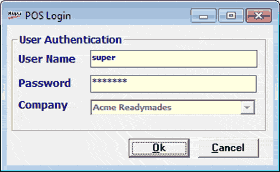
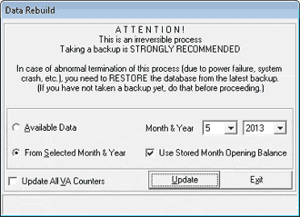

This option is to rebuild the stock transaction summary data, and update the stock balance and the cost price of the item. Only Shoper administrators can do data rebuild.
Updating stock transaction summary data becomes necessary when
There are inconsistencies in the stock values among different reports.
Stock balance of items are shown as negative, even when sales of items without available stock is disallowed.
How to reach: Setup > Supervisory Functions > Data Rebuild
The POS Login window is displayed.

User Authentication: You need to provide a Shoper administrator's credentials, as supervisory user rights are required to carry out data rebuild.
User Name: Enter the user name.
Password: Enter the password.
Company: The currently open Shoper company name is displayed.
The Data Rebuild window is displayed.

Available Data: Select to rebuild the data, based on the complete data available in the database.
From Selected Month & Year: Select to consider the stock transactions from a particular month and year for the rebuilding process.
Month & Year: Select the month and year from when the data has to be rebuilt.
Use Stored Month Opening Balance: Select to use the month opening balance recorded in the stock transaction summary data of the specified month. If left unselected, the month opening balance is computed from the opening balance recorded for the previous month and the transactions in the previous month.
Update All VA Counters: Select to update the counter number of all the transactions that are processed while updating the stock transaction summary data. Shoper 9 uses counter numbers as an internal mechanism to identify the data aging for synchronisation, wherever applicable.